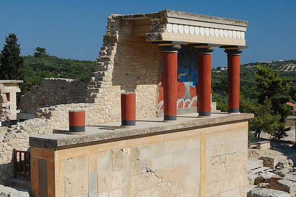
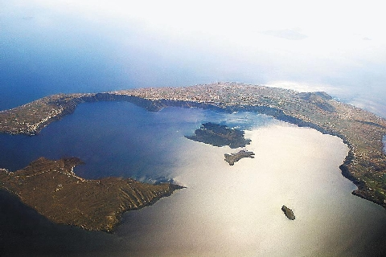
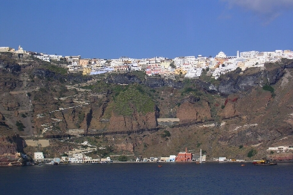

W 2006 roku powsta³ pomys³ rejsu po Morzu Egejskim w dwóch etapach z Aten przez Rodos do Heraklionu na Krecie i powrotny przez Cyklady do Aten/Alimos. Wyczarterowaliœmy jacht Olimpic Sea 42/ Legend II od Ioannisa Makridakisa z Sail Greece Ateny / Alimos.
15 Wrzesnia 2007 wyl¹dowaliœmy w Hekaklionie i pojechaliœmy do portu po³¹czonego z marin¹. Oczywiœcie, ¿eby tradycji sta³o siê zadoœæ przywita³o nas Meltemi. Dziewczyny trochê sie przestraszy³y pogody i namawia³y nas, aby wyjœcie przesun¹æ o dzieñ, b¹dŸ dwa.
¯eby nie traciæ czasu pojechaliœmy zwiedziæ ruiny zamku króla Minosa w Knossos, co zajê³o ponad pó³ dnia. Wracaj¹c, zahaczyliœmy o targ w Heraklionie i z oko³o 30 beczek z oliwkami wybraliœmy, ob¿eraj¹c siê niemi³osiernie, trzy gatunki w sumie by³o tego kilka kilo. Obok portu w lokalnym GS-sie dokupiliœmy kilka lokalnych gronowych. Nastêpnego dnia drobne zakupy uzupe³niaj¹ce i popo³udniu przeskoczyliœmy do zatoczki na pobliskiej wysepie Dia. W poniedzia³ek oko³o 9:00 ruszyliœmy na pó³noc w stronê grupy wysp Christianos, gdzie dotarliœmy,
po 85 Nm ¿eglugi doœæ ostrym bajdewindem, oko³o 20:30. Okaza³o siê, ¿e w zatoczce, wktórej planowaliœmy rzuciæ kotwice roji siê od nurków, pe³no ³odzi bojek nurkowych. Decyzja by³a jedna p³yniemy prosto na Thirê (Santorini), zosta³o 16 Nm, a wiart trochê zdech³, ale za to wszyscy podziwialiœmy piêknie swiec¹cy w pe³ni Ksiêzyc . Tu¿ po pó³nocy 18.09 zaczêliœmy wchodziæ do wnetrza zatoki i wtem pad³o pytanie „Czy mam p³yn¹c na to miasteczko przed nami?”, „Wal smia³o” pada odpowiedŸ, „OK.” Po pó³godzinie miasteczko, a raczej 10-12 piêtrowy wierzowiec zapali³ reflektor na dzibie, oslepi³ nas ca³kowicie i zacz¹³ p³yn¹æ prosto na nas. Przeszed³ nieca³e 100 m od nas. Zacumowaliœmy w zatoczce na wewnêtrznej wyspie Nea Kameni. Nomen omen ca³a wyspa jest z kamieni bazaltowych, lawy itp. Rano przed nami roztoczy³ siê w okó³ wspania³y widok Thiry. Przep³ynêliœmy na drug¹ stronê i zacumowaliœmy miêdzy kej¹ a gigantyczn¹ boja dla statków i wjechaliœmy gondolkami na szczyt do miasta. Mo¿na wejœæ na piechotê ponad 300 m npm. i ponad 800 stopni. Dodatkowe wra¿enia, mu³y gryz¹ w ty³ek jak za wolno wchodzi siê pod górê, nie wspominaj¹ o urokliwym „aromacie mulich bobków”, srdecznie odradzam ten warian drogi. Miastczko piêkne, typowe dla gerckiej nadbrze¿nej zabudowy i wspania³e widoki na lagunê i zatoczki, t³umy turystów. Poza Thir¹ na Santorini (Thira), godn¹ odwiedzenia jest Oia na pó³nocnym koñcu wyspy. Na dole, pod Oi¹ jest keja gdzie mo¿na zacumowaæ, jest woda, dwie czy trzy knajpki i tam przeniesliœmy siê na noc. Rano przeskok na s³ynne Amorgos, ale zanim dotarliœmy przed zmrokiem pêk³ nam steroci¹g i zapasowy rumpel musia³o trzymaæ dwoje za³ogantów. Po zmroku meldujemy siê na kei w Katapola pod sam¹ kafejk¹ „Le Grand Bleu”. Amorgos to wyspa gdzie Luc Besson kreci³ kultowy film nurkowy „The Big Blue”, a w kafejce codziennie o 19:00 jest projekcja filmu. Rano zamówiliœmy œciski do linek stalowych,¿eby naprawiæ steroci¹gi w jachcie.
Wyporzyczyliœmy quady i przez Chorê pojechaliœmy na drug¹ stronê wyspy zwiedziæ klasztor Chozoviotissas i zatoczkê z ma³¹ kapliczk¹, która w filmie by³a domem ma³ego Jacque’a Mayol'a. Popo³udniu odebraliœmy czêœci i dokoñczyliœmy
naprawê steroci¹gów, no i oczywiœcie wieczorem obowi¹zkowo „The Big Blue”. Wieczorem wiatr rozwiewa³ siê coraz bardziej, zbli¿a³o siê Meltemi. Wczesnym rankiem wyszliœmy z Katapoli kursem na Schinousse. Robi¹c zakupy w pobliskim sklepie, dowiedzieliœmy siê, ¿e w tawernie niedaleko naszj ³ódki o pó³nocy zaczyna siê „dyskoteka” w stylu greckim.
Czêœæ za³ogi reprezentowa³a nas na parkiecie odpowiadaj¹c na greckie tradycyjne tañce rock’n’rollem. Poniewa¿ tañce trwa³y do 4:30, po powrocie do ³ódki, stwierdziliœmy, ¿e nie ma sensu k³aœæ siê spaæ, wiêc wyp³ywamy.
Ruszylismy na zachód wstronê Iraklii, wiatr dochodzi³ w porywach do 35 kn, wiêc staraliœmy siê jak najszybciej uciec na zachód na Sifnos. Wieczorem wp³ynêliœmy do zacisznej zatoczki Vathi. Rano zakupy, gaz, szampan zadanie dla ekipy zaopatrzeniowej. Wieczorem knajpka na brzegu ze stolikami,do których niemal¿e dochodzi³y fale. Jak zwykle by³o wspaniale w³¹cznie z szantami. Rano 23.09 ruszyliœmy w stronê Serifos, w asyœcie delfinów, których stadka podp³ywa³y do nas przez ca³a drogê na Kithnos. Wieczorem zacumowaliœmy w Merichas i uda³o nam siê jeszcze z³apaæ jedyny otwarty sklep, szybkie zakupy i powrót na ³ódkê. Nastêpnego dnia pop³ynêliœmy w stronê wyspy Kea i stanêliœmy w zatoczce Pisses, nastepny przeskok zrobiliœmy do Ormos Vourkari na pó³nocnym koñcu Kei. 27 wrzeœnia, trzeba ju¿ p³yn¹æ w stronê Zatoki Saroñskiej i po ostatniej k¹pio³ce staneliœmy na noc w Ormos Anavissou. Zacz¹³ siê wie wieczór kapitañski i na g³ówny toast otwieramy „szampana” wznosimy toast, pijemy i w tym momencie Ewa mówi „s³uchajcie przecie¿ to woda mineralna” i rzeczywiœcie, wachta zaopatrzeniowa kupi³a na Sifnos mineraln¹, tylko butelka ich zmyli³a. Na szczêœcie mieliœmy wystarczaj¹cy zapas wina, wiêc wieczór szantowy siê uda³y. Nastêpnego dnia ostatni przeskok do Kalamaki i potem wyprawa na Akropol i ostatni wieczór w knajpce po Akropolem.
Za³oga: Ewa, Iwonka, Jola, Kasia, Cezary, Romek, Tomek, Robert